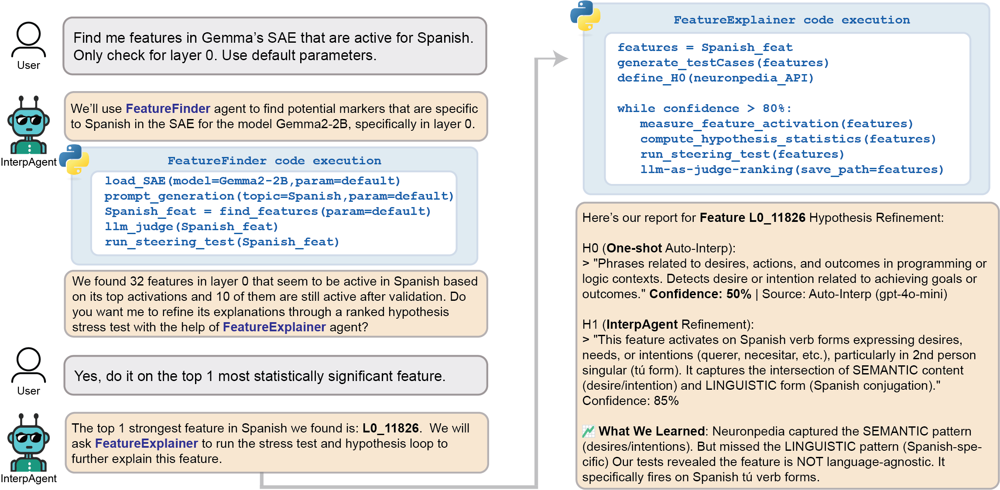
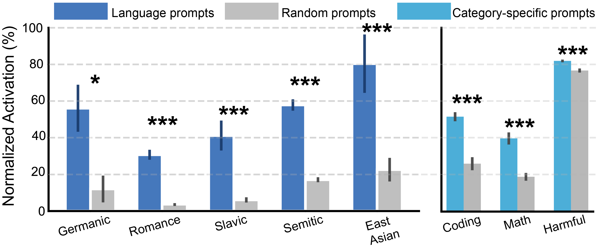

Automated Interpretability and Feature Discovery in Language Models with Agents
论文笔记: Automated Interpretability and Feature Discovery in Language Models with Agents
关键问题：现有 SAE auto-interpretation 通常只对一个已知 feature 看 top activations、生成一次标签；它既不会主动找反例，也假设用户已经知道该看哪个 feature。
关键做法：InterpAgent 把可解释性改造成两个可循环调用的实验过程——FeatureFinder 从自然语言目标出发找候选 feature，FeatureExplainer 对候选解释执行“提出假设 → 设计对照 → 读真实激活 → 修订”。
关键结论：在作者自定的七指标排序下，迭代假设胜过 one-shot 标签的比例为 63.5%–83.3%；但这不是独立人工真值准确率，结论强度应限定为“更符合该评测闭环”。
我的判断：最有价值的不是 multi-agent 这个包装，而是把 auto-interpretation 从“生成描述”推进到“维护竞争假设并主动证伪”。最薄弱处也恰在这里：LLM 同时参与生成假设、生成测试集和部分评分，尚缺一套与该闭环独立的 ground truth。
1. 背景信息
- 作者：Arnau Marin-Llobet（Harvard University）、Javier Ferrando。
- arXiv v1 发布于 2026-05-02；论文未标注会议或期刊。
- 研究对象主要是 Gemma-2 系列的 SAE features，并在一个 weight-sparse GPT-2-style Transformer 的原始 MLP neurons 上验证表示无关性。
- 代码：InterpAgent。
2. 关键问题：解释器不仅会“说得像”，还不知道该从哪里开始找
Golden Case — 西班牙语 feature 在哪里？
用户只提出“找与 Spanish 有关的内部特征”，却没有 feature ID。传统 auto-interpretation 无法开始，因为它的输入就是一个已选中的 feature。即便人工先找到某个 feature，一次性标签也可能只写成宽泛的“technology/troubleshooting expressions”，漏掉真正决定激活的语言约束。
论文瞄准两个串联的 bottleneck：
- Discovery：SAE 每层有成千上万特征，仅能解释“给定 feature”并没有回答“哪个 feature 与我的问题相关”。
- Explanation：top-activating examples 只给正例局部，one-shot 标签容易抓到语义邻域，却漏掉语言、句法或上下文等必要条件；遇到 polysemantic feature 时还会硬压成单标签。
作者因此主张，可解释性应被视为实验过程，而不是 metadata generation：解释必须能预测哪些输入激活、能被 matched controls 反驳，并在必要时接受 causal intervention。
3. 关键方法：发现与解释是两个相互供给证据的循环
Golden Case — 从“Spanish”到可检验解释
- 用户输入自然语言目标“找 Spanish-selective features”。
FeatureFinder生成带组别的 Spanish / control prompts，抽取每条 prompt 的 SAE activation vector，在 activation space 建图、聚类并做差异激活检验，返回候选 feature 和高激活例子。FeatureExplainer从候选及 one-shot 标签出发，保留多个竞争假设；对每个假设生成 12 个 predicted positives 和 12 个 matched negatives。- 它在真实模型上测激活，用七项指标定位失败模式，再修订假设。论文 Figure 2 的例子最终把宽泛描述收紧为“表达愿望的 Spanish verb forms”。
- 若多个语义不同的假设仍获得相近支持，就报告 polysemanticity；若需要验证行为作用，再做 steering，而不是把相关激活直接叫作因果机制。

图 2 最值得看的是信息流：Finder 的输出不是最终解释，而是 Explainer 的待检验假设种子；两个 Agent 共享 Python 环境与持久记忆，supervisor 只负责路由，用户也可以只调用其中一条链。
3.1 FeatureExplainer：固定评测电池约束自由生成
每轮最多维护若干假设，对每个假设用七项指标排序：Detection F1、Fuzzing F1、Surprisal AUROC、embedding similarity、LLM-as-judge coherence、$t$-test 的 $p$-value、Cohen's $d$。可选 steering 不默认进入排名。
排序不是把异质量纲直接相加，而是先转成各指标的 ordinal rank，再取平均，并过滤 Pareto-dominated hypotheses。Agent 针对最弱指标构造下一轮反例；最多运行 4 次 refinement（方法部分举例预算为 5），或在最佳假设稳定且没有新 counterexample 时提前停止。语义不同而分数接近的多组解释会触发 polysemantic flag（Section 3.2, Appendix A.1–A.2）。
这里的设计选择很关键：matched negatives 决定标签是否包含必要约束。例如只给 French technology 正例，模型很容易写成“技术”；加入语义相似的 English technology 负例，语言约束才会暴露。
3.2 FeatureFinder：先用局部几何提召回，再用统计量与语义筛选提精度
给定带弱标签的 prompt 集 $\mathcal D=\{(p_i,y_i)\}_{i=1}^{N}$ 和 $D$ 个候选 feature，构造：
其中 token reduction 可取末尾若干 token 或均值。流程为：
- 对每条 prompt 的稀疏、heavy-tailed 激活做归一化与 log transform。
- PCA 降至最多 $\min(200,N-1)$ 维；用其中 $\min(n_{pcs}-5,50)$ 维建立 $k=15$ 的 k-NN graph。
- Leiden community detection（默认 resolution 0.5）得到 prompt communities。
- 对每个 group-feature 对做 Wilcoxon rank-sum test，并以 Benjamini–Hochberg 控制 FDR。
- 保留 adjusted $p<0.001$、composite score $>2.0$、log-fold change $>0.5$、Cohen's $d>0.3$ 的候选，再由 LLM judge 筛 specificity / relevance（Section 3.3, Appendix A.3）。
这个流程并非严格“无监督发现”：用户或 Agent 仍需构造带 group labels 的 prompt set，统计检验也是围绕这些组展开。更准确的说法是：不预先给 feature ID 的弱监督检索。
4. 数据与实验设置
- 解释改进：one-shot baseline 和 refinement 使用同一个 LLM；baseline 从
pile-uncopyrighted的 top-activating examples 生成。GPT-4o-mini 覆盖 layer 13/17 共 1,600 features，Gemini 2.5 Pro 覆盖 300，Claude 4 Sonnet 仅 layer 17 的 60 个（Table 1 / A1）。 - 语言聚类：20 种语言、每种 500 prompts，共 10,000 条，在 Gemma-2-2B layer-0 SAE activation space 比较 k-NN+Leiden、K-Means、Agglomerative 与 random（Table A5）。marker 检索另用 18 种语言组成 5 个 language families（Table A6）。
- 跨概念发现：coding、symbolic math、harmful prompts，运行于 Gemma-2-2B SAE layers 0/8/11（Table A7）。
- 非 SAE 泛化：12-layer、hidden size 1,024、每层 4,096 MLP neurons 的 weight-sparse GPT-2-style Python 模型；16 个语法类别，每类 100 prompts，共 1,600 条，直接使用 post-GELU neuron activations（Appendix A.9）。
5. 关键结果：迭代确实收紧标签，但“赢”由自身指标体系定义
5.1 Explanation refinement
要验证什么：同一 LLM 多轮提出反例，是否优于它的一次性 auto-interpretation。
观察：在七指标 aggregate rank 下，refined hypothesis 获胜率为 GPT-4o-mini 63.5%（N=1,600）、Gemini 2.5 Pro 79.2%（N=300）、Claude 4 Sonnet 83.3%（N=60）；较强 LLM 更会提出有效约束（Table 1）。迭代 1–2 已贡献相当一部分胜例，但 Table A1 并不支持严格单调收敛：不同 iteration 都可能成为最终最佳。
具体的 French feature L0_F9004 很说明问题：baseline “knowledge and understanding expressions about technology and troubleshooting”平均 rank 4.07；Refined-2 加入“informal French syntax and colloquial expressions”后平均 rank 1.92，Detection F1=1.00、Fuzz F1=0.75、Surprisal AUROC=0.71、$d=2.53$（Table 2 / A8）。另一方面，L4_F12773 的 coding/equations、medical research、technical discourse 等假设同时竞争，系统没有强行收敛，而是判为 polysemantic（Table 3 / A9）。
证据边界：baseline 与 refinement 不是在独立标注集上比较解释真值；新假设还有更多搜索机会，最终又从所有迭代候选中择优，存在 multiple-attempt advantage。论文也未报告人工专家盲评与跨生成器测试集，因此 83.3% 不能读成“解释准确率 83.3%”。
5.2 Feature discovery
语言 benchmark 上，k-NN+Leiden 的 ARI=0.315、NMI=0.536，优于 Agglomerative（ARI=0.130）与 K-Means（ARI=0.118），说明 local neighborhood 比 global partition 更适合这里的 activation geometry；但 ARI 绝对值仍不高，发现依赖后续强筛选（Table A5）。初始语言 marker 中最终仅 0.2%–4.0% 通过 LLM screening（Table A6）。
在语言、coding、math、harmful 八类有存活 marker 的类别上，category prompts 的激活均显著高于 random controls，作者报告独立样本 $t$-test 为 $p<10^{-4}$（Figure 4）。层分布也有可解释趋势：math/coding markers 出现在 layers 0/8，safety markers 出现在 layers 8/11（Table A7）；不过每格仅 0–3 个 validated markers，不足以把这种分布当成稳健的“深层更抽象”定律。

图 4 支持的是“筛选后 marker 对目标组有 activation separation”，不是完整 discovery pipeline 的 recall；没有被找到的真实 features 无法从这张图评估。
5.3 因果性、泛化与成本
- Safety case 中，对一个发现方向施加 $-50\times$ intervention 会降低目标危险 prompt 的 refusal，同时保留 benign instruction following 和一个无关 illicit request 的 refusal（Figure 6）。这是有 specificity controls 的因果证据，但只有单个定性 case，且作者出于安全原因隐藏 feature ID 与 recipe，无法完整复现。
- 在 weight-sparse 模型上，pipeline 自动找回人工电路分析的 4 个关键 neurons 中 2 个；另 2 个因不区分类别或测量位置不同而按设计不会被召回。14 个 neuron hypotheses 的平均验证 accuracy 为 75%，12/14 高于 chance（Table A10）。这是很好的外部锚点，但仍局限于边界清晰的 Python syntax features。
- 迭代解释每 feature 需要 13 calls、16,867 tokens、176.3 s、$0.0061，相比 one-shot 分别是 13×、23×、24×、34×（GPT-4o-mini，26 features；Table A3）。成本绝对值低，但 wall-clock 并不低，批量扫描仍需要并发工程。
6. Insights
6.1 真正的贡献是把“自动标注”变成“自动实验设计”
观察：French case 的 baseline 已捕捉 technology 语义，但 matched controls 才逼出 French colloquial 这一必要条件。推理：auto-interpretation 的主要瓶颈未必是生成器不够聪明，而是证据只有 top positives，问题本身欠约束。判断：复用这项工作时，最先值得拿走的是 contrast-set generation + failure-driven revision，而不是 multi-agent 架构；一个单 Agent 只要能隔离状态并可靠执行工具，也可能得到大部分收益。
6.2 需要一个“评测生成器外部化”实验
观察：假设、12+12 测试 prompts 和 coherence judge 都可能来自同族 frontier LLM，refinement 又享受四轮择优。推理：更强模型胜率更高，既可能代表更会发现真实约束，也可能只是更会优化这套 metric battery。判断：下一步最关键的实验不是再加一项自动指标，而是冻结人工/程序生成的 hidden contrast set，并做 generator × evaluator 交叉矩阵；若 refinement 在 unseen controls 和专家盲评上仍赢，证据才真正闭环。
6.3 FeatureFinder 更像高召回假设生成器，而不是完成态发现算法
观察：语言候选只有 0.2%–4.0% 通过筛选，k-NN 的 ARI 也只有 0.315。推理：统计显著性在大 feature dictionary 中只能给候选，语义精度主要由后段 judge 提供。判断：实际审计时不应只展示 surviving markers；还应报告已知 planted features 的 recall、不同 prompt paraphrases 下的稳定性，以及筛选阈值的 precision–recall 曲线，否则用户看不到 false negatives。
6.4 “发现 → 解释 → 干预”必须保留三档证据标签
观察：Figure 4 证明相关性，French case 证明可预测性，Safety case 才包含行为干预。推理：如果 UI 把三者都显示成“已解释 feature”，使用者很容易把 selectivity 当成 causal role。行动：在类似工具中强制给结果标注 correlational / predictive / causal，并附测试集、失败例和 intervention record；这比单个自然语言标签更接近可审计的解释对象。
7. 连接与发现
- MOC-Interpretability — Topic: 将 SAE 特征自动解释从 one-shot label 推进为“发现、对照测试、修订、可选因果干预”的可审计流程。